The purpose of this notebook is to predict the right group of the new customers. I will be using the data obtained from Kaggle in this link kaggle. Upon completion I will have practiced combining train and test, encoding numerical and categorical data, as well as analysis and visualization. I will conclude with a csv file that show the ID data test of each cluster.
This dataset contains the following data:
| # | Column | Detail |
|---|---|---|
| 1 | ID | Unique ID |
| 2 | Gender | Gender of the customer |
| 3 | Ever_Merried | Marital status of the customer |
| 4 | Age | Age of the customer |
| 5 | Graduated | Is the customer a graduate? |
| 6 | Profession | Profession of the customer |
| 7 | Work_Experience | Work Experience in years |
| 8 | Spending_Score | Score assigned by the mall based on customer behavior and spending nature |
| 9 | Family_Size | Family Size of the customer |
| 10 | Var_1 | Anonymised Category for the customer |
| 11 | Segmentation | classified all customers into 4 segments (A, B, C, D ) |
Code
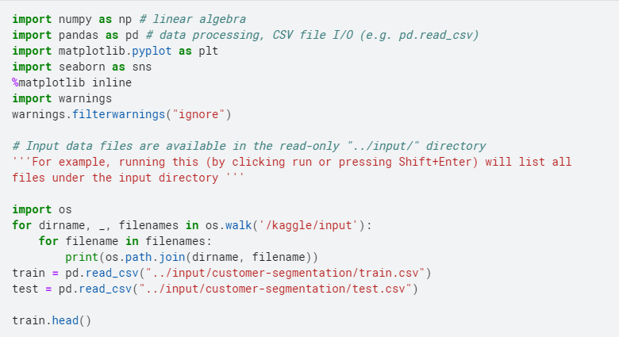Result 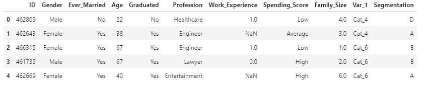
shape of train data (8068, 11)
shape of test data (2627, 10)
| # | Type | Column |
|---|---|---|
| 1 | categorical data | Gender, Ever_Merried, Graduated, Profession, Var_1 |
| 2 | Ordinal data | Spending_Score |
| 3 | Numerical data | ID, Age, Work_Experience, Family_Size |
Type of Profession based on its segmentation. Each segmentation is dominated by artist profession. Most artist professions are included in segment C.
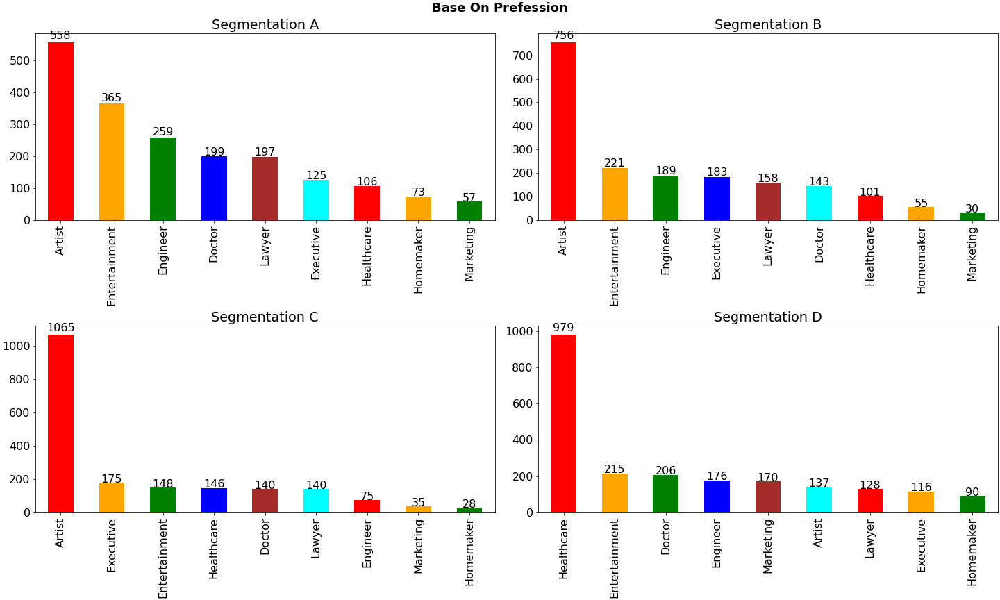
Type of Graduated based on its segmentation just only has 2 values 'Yes','No'.
Each segmentation is dominated by graduate
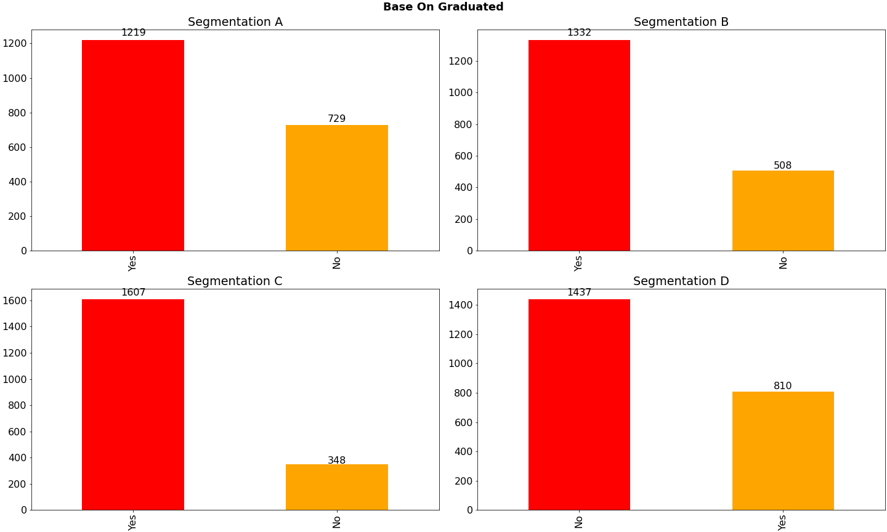
Many family members in the range of 1-9 people. Each segmentation is dominated by 2 family members.
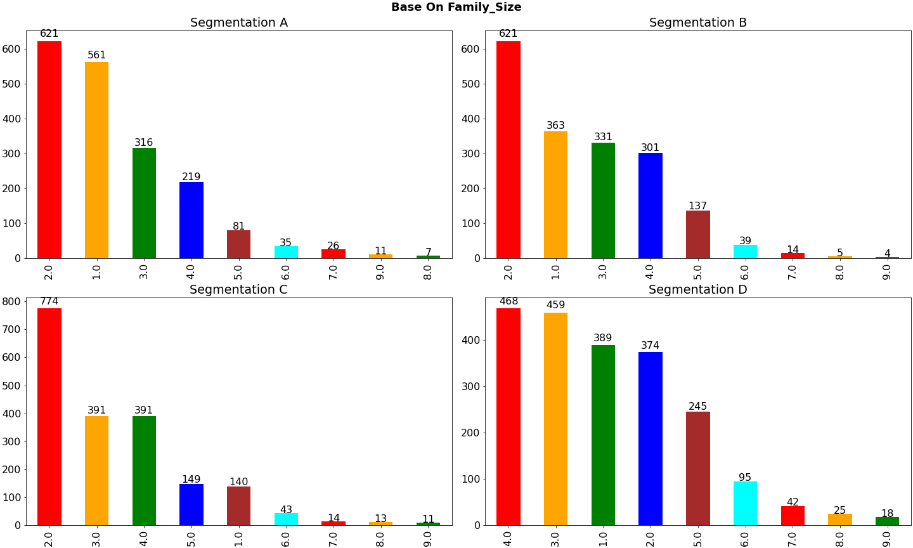
The Ever_Married column category has 2 values namely 'Yes','No'. Each segmentation is dominated by people who have been married.
Segmentation D has the most members ever married
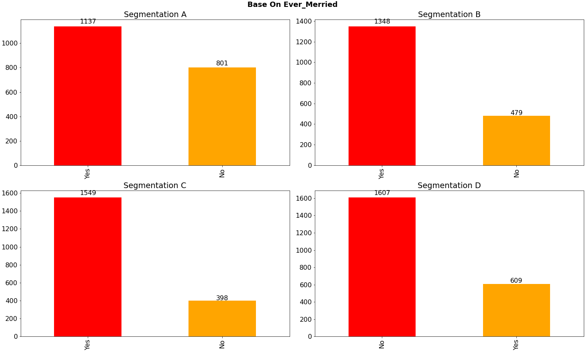
The Ever_Married column category has 3 values namely 'Low','Average','Heigh'. Each segmentation has a
low spending score, except for segment C, which has high and average spending score.
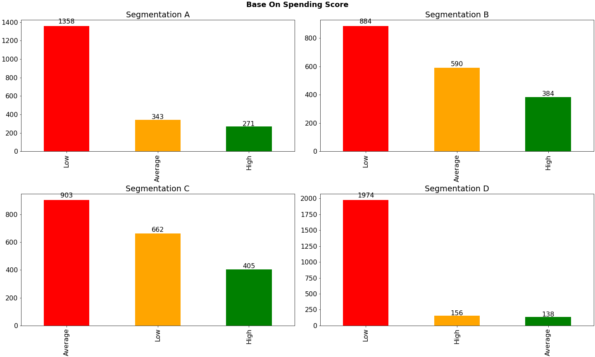
Code
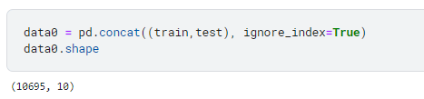There are more men than women
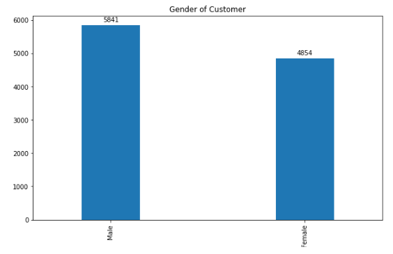The average Work_Experience of respondents is under 5 years. The average Family_Size of respondents is 3. The average Age of respondents is under 43.
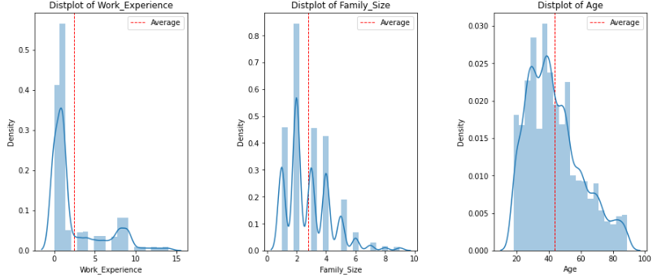There are 9 professions including Artist, Healthcare, Entertainment, Engineer, Doctor, Lawyer, Executive, Marketing, Homemaker. Profession Artist is the most and Homemaker is the least.
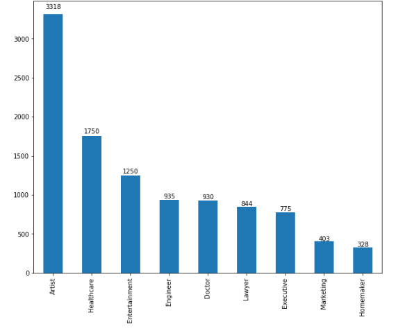After train and test are combined, the number of null values is shown in the image below. Segmentation is the target for which the value will be sought. Only 3 columns that do not have null values, namely Gender, Age and Spending Score.
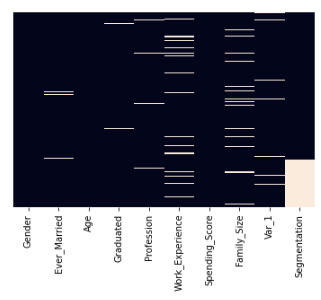 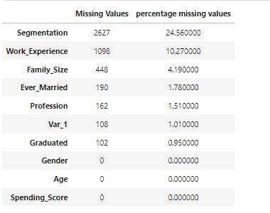
Cleaning data is adjusted to the type of data and data needs that we will use to build the model.
- Column Var_1 dropped because it is not needed
- Empty values in numeric data types (columns : Age,Work_Experience, Family_Size) are filled with mode
- Empty values in the Categorical data type (column:Ever_Married, Profession, Graduated, Gender) are filled with the words none and then the encoder label is carried out
- Empty values in ordinal data type (column: Spending_Score) are filled with label mapping 'Low' : 1, 'Average':2, 'High':3
Here's the result from cleaning data process: 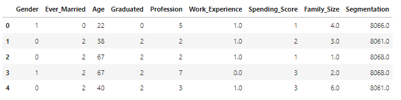
Beautiful. We have no missing values. Data that is encoded numerically in a way that more contextually similar
answers are closer together in euclidean space. But we need to use min max scaler, transform features by scaling each feature to a given range between 0 and 1.
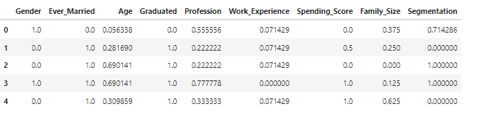
We should be good to go for clustering. But before it, I want to know correlation among the columns in the dataframe.
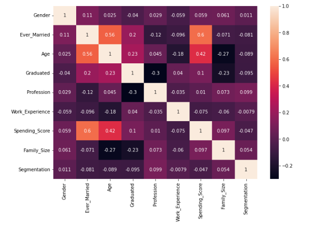
Profession, Graduated, Age, Ever_Merried have a big influence on segmentation (target).
The final target for this model is to know about the segmentation from ID data test. The segmentation consist of 4 types : A,B,C,D
Code
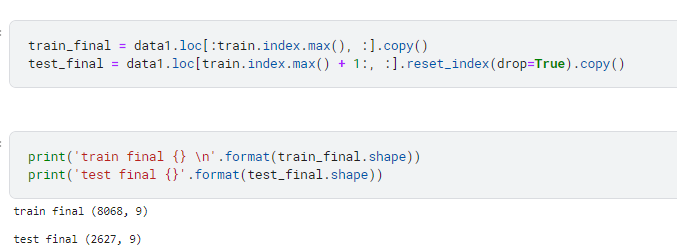
Result:
train final (8068, 9), test final (2627, 9)
Code
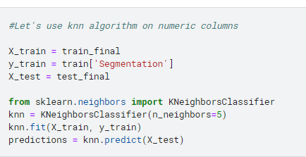
Because we need to change the final result in categorical value, meanwhile in KNN method we have to change all data to numerical value,
so I have prepared data dict from segmentation train data. OrderedDict([('A', 8061), ('B', 8068), ('C', 8062), ('D', 8066)]).
The next step is make csv file from model was built.
Code
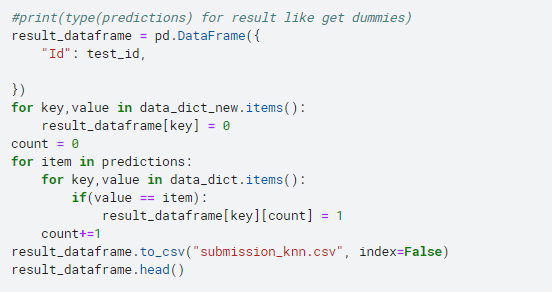
It's the result
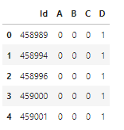
The results are still in the form of dummies. To convert it to regular form, I created a separate data frame for ID and
created a segmentation with an index of 1. Then recombined it based on the index equation. So that the following results are obtained:
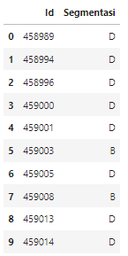
Code details can be checked at the following link kaggle
In conclusion, we practiced our data preprocessing. From the four types of segmentation as targets, here's the result:
Segmentation A: Entertainment, Engineer, Lawyer who has graduated from college with family members
1-2 people and never married, low spending score
Segmentation B:
executives who have graduated from college with family members
1-2 people and never married, low spending score
Segmentation C:
Artists who have graduated from college with 2 family members and have been married,
spending score high or average
Segmentation D:
Healthcare, doctor, homemaker, marketing or people who have not graduated from college with family members
3-4 people and never married, low spending score
Suggestion :
- Segmentation A, because it is dominated by mature men of approximately 30 years from the Entertainment, Engineer, Lawyer professions are
suitable for entering the customer category with the need for tools that support the appearance and the latest technology products
- Segmentation B can be done by offering household products and long-term investments such as gold, land and others
- Segmentation C is the right target to advertise products that are up to date with youth advertising style
- Segmentation D is suitable for selling promo or discounted items, washing warehouses, goods with rijek